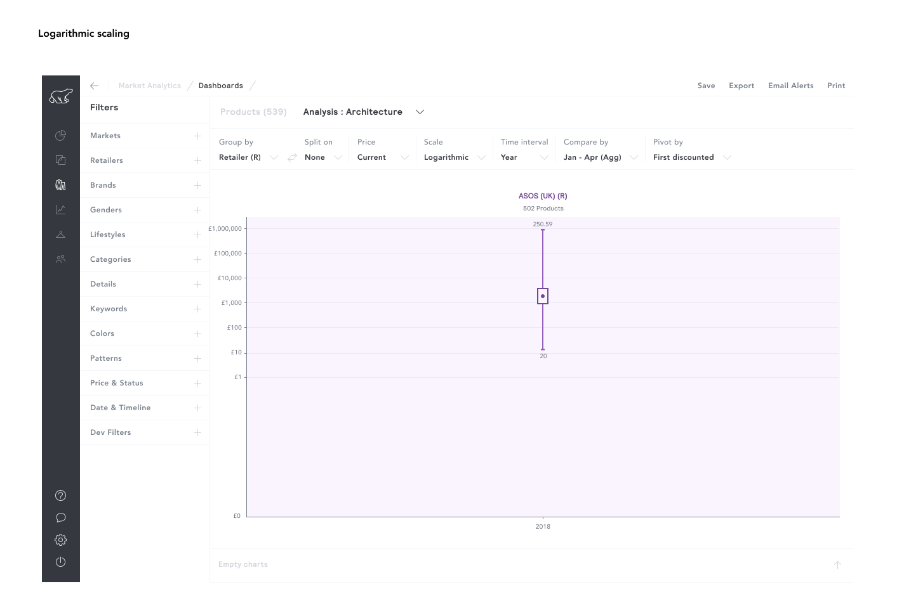

Data visualisation · 2017 → today
Making sense of scale
×
01
2017 → Now
02
Scale
03
Outliers
04
The right chart
←
01 / 04
→
×

The original, EDITED 2017. Spot the label on the £1,000,000 line.
What this choice does
What it says
What it hides